My final project is a voltage-reading device which communicates via USB through FTDI to a software on your computer to display the current voltage being read. It features an ATTiny 412 as the microcontroller.
Today I began and finished my KiCad PCB board design for my project. I created a schematic which would run off of an ATTiny412 and which included an analog voltage sensor as well as RX/TX pinouts to communicate with an FTDI board. I milled it out and you can see my schematic, PCB view, and the final mill result.
Schematic View:
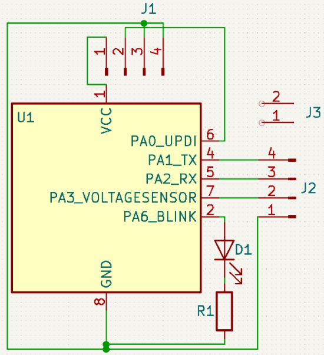PCB View:
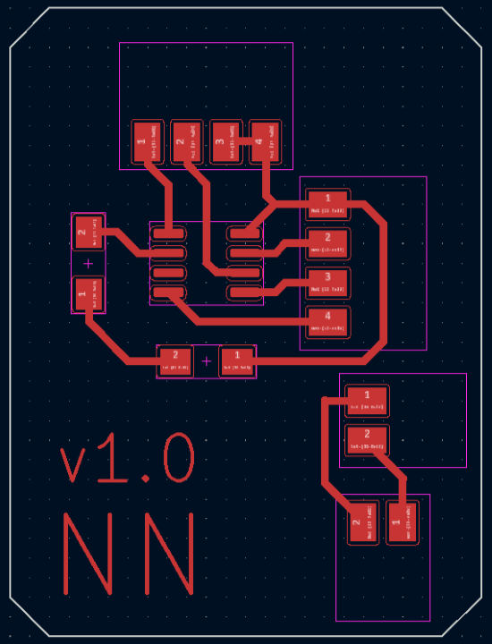Final Milled PCB:
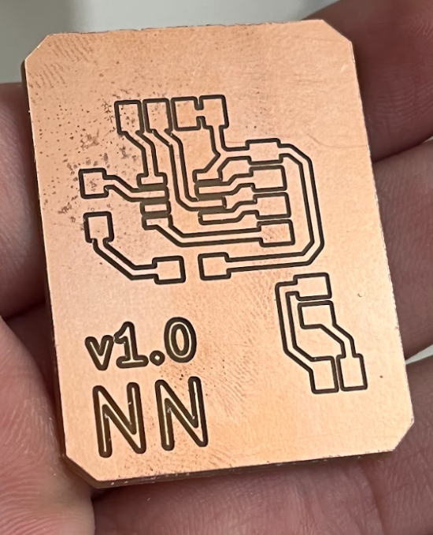Today, I soldered on an ATTiny 412 for the microcontroller and a set of 4x1 horizontal pin headers. I then connected it to an arduino, made the arduino a programmer, and programmed my ATTiny with a blank file just to make sure everything was soldered correctly, which it was and it worked.
Soldered Board:
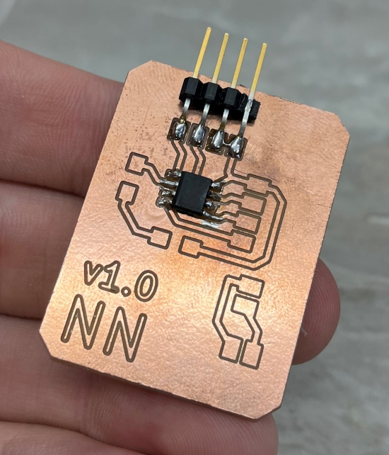Wired-Up Board:
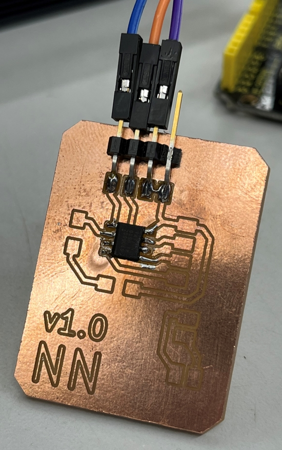Programming Board:
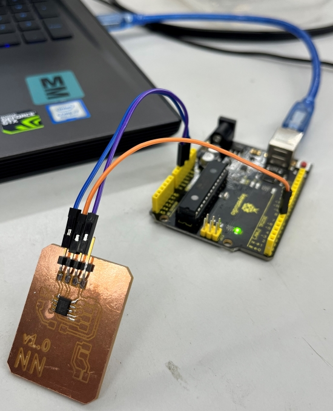Today, I soldered the rest of the components onto the board.
Newly Soldered Board:
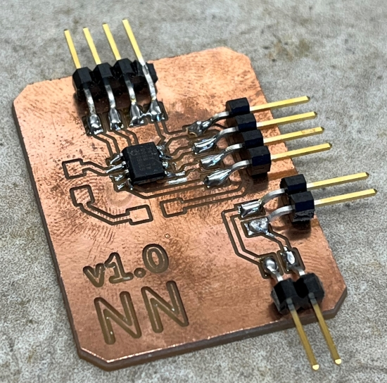I then soldered on the debug LED and debug LED resistor.
Soldered Board With LEDs:
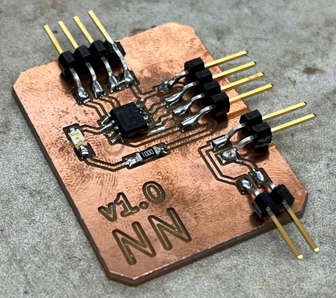Today I wired my now soldered board up to an Arduino equipt already with Jtag2UPDI in order to program it. I luckily already had the code from previous work, which is as follows:
Code:
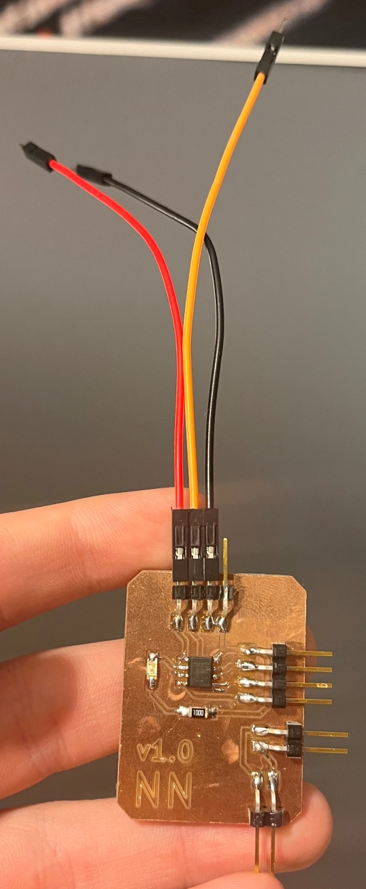I originally used the tutorial found here to code this and have made modifications over time.
From here, I wired the arduino to my board as follows:
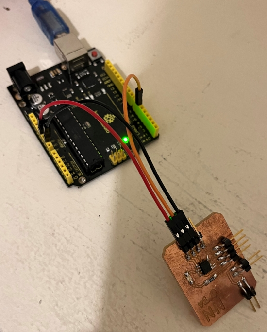 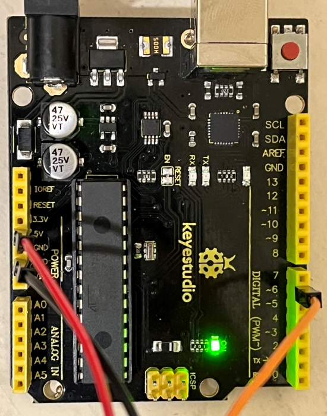From here, I developed the Unity program for this project. I made a copy of the files in which I had been working on prior with Mr. Dubick, my instructor, to make a simpler more watered down version while still utilizing some of the features. I began by copying the project files. This is what the program looked like currently:
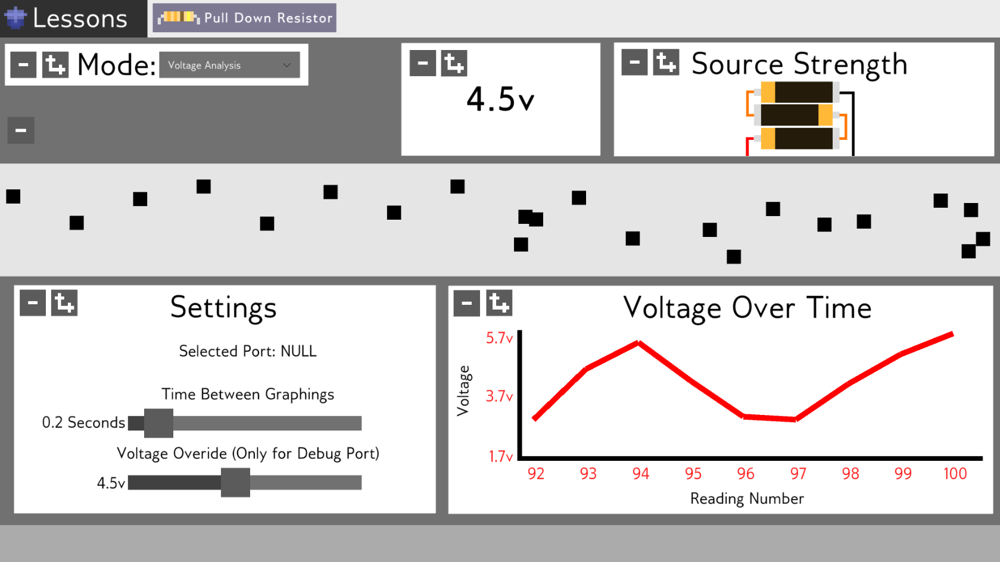I took this program and removed a bulk of the features, such as the lesson system and mode system, stripping it down to strictly the voltage graph and voltage number.
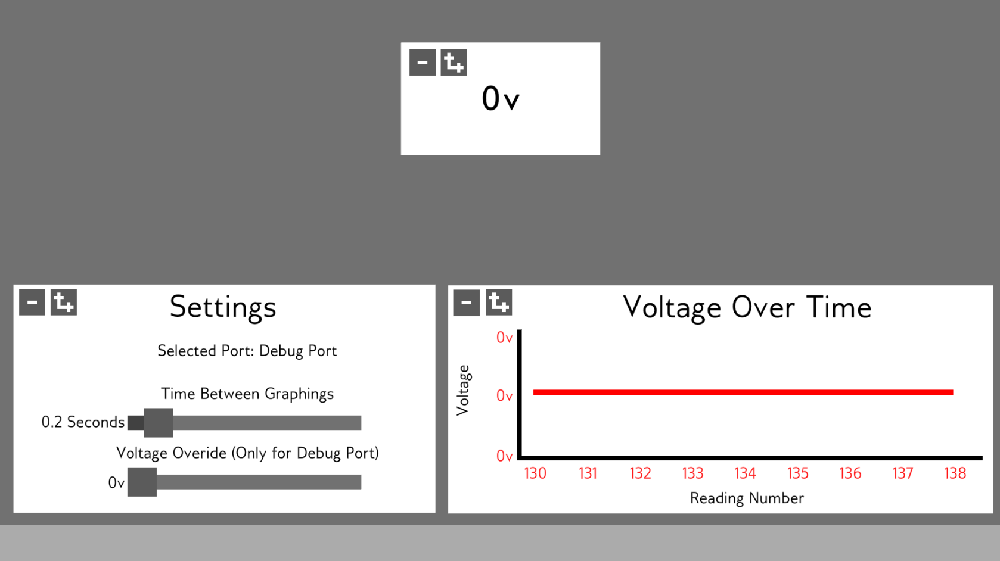